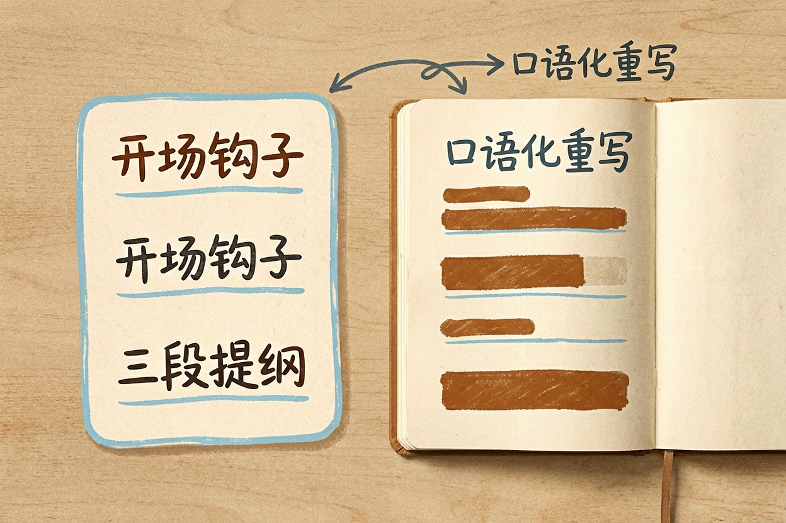
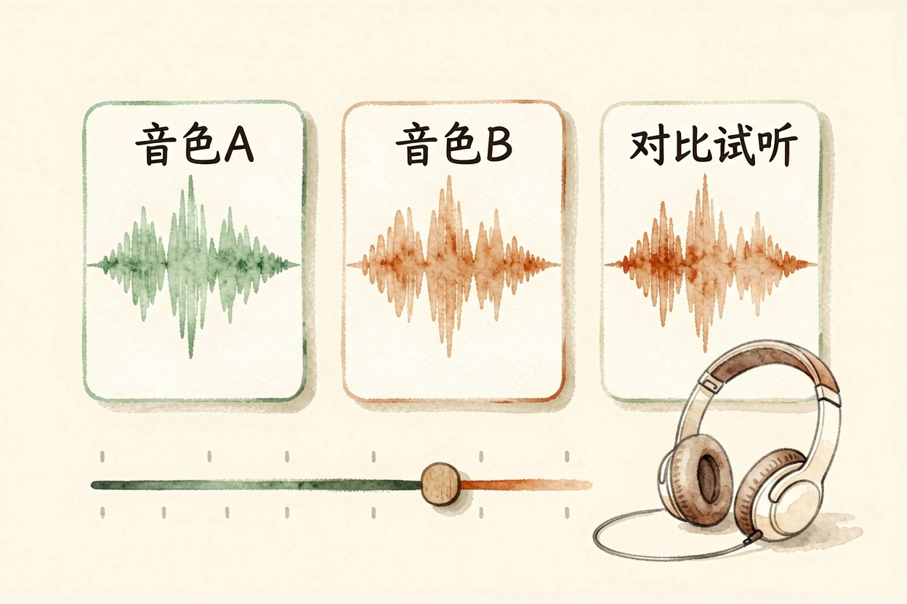
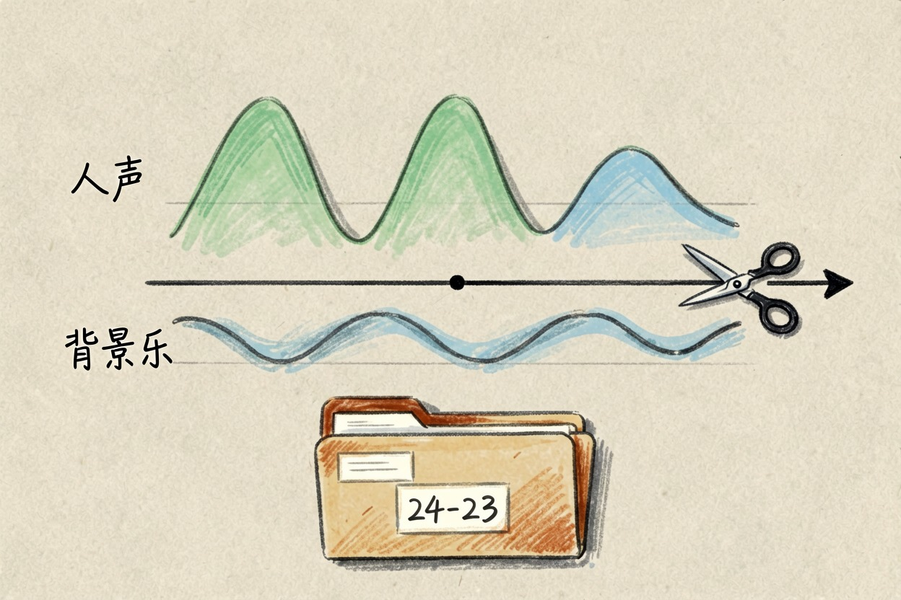
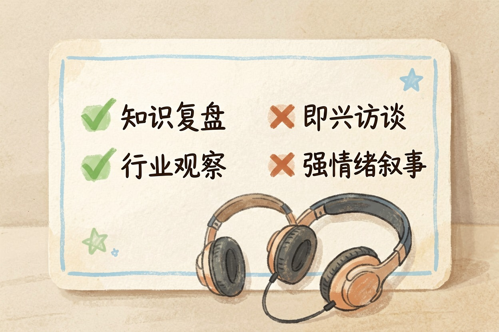
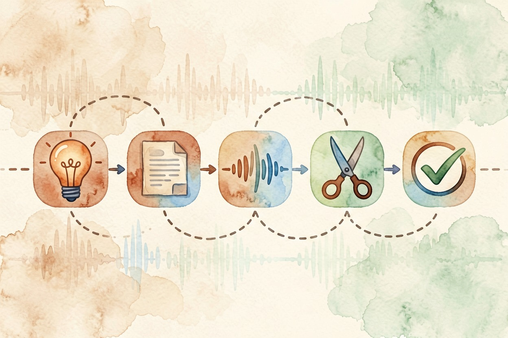

用 AI 做播客：没有搭档也能轻松开播的完整流程 — Learntide
想做播客又怕没搭档、不会录音？让模型先把写稿这道坎替你跨过去，配音再交给工具。
ai做播客：先把稿子和声音搞定

ai做播客，卡人的一直是两件事：说什么，谁来说。模型能把提纲和口播稿写出来，配音工具能把稿子变成人声。你负责定选题、审稿、拍板。一个人也能把节目做起来。
先说清能力边界。AI 给得了结构和初稿，节奏和观点还得你自己把关。它写出来的东西平均水准不差，但缺个人味儿，原样发出去容易显得空。
还有一点要认。播客拼的是听感，文采排在后面。稿子写得再漂亮，念出来绕口就白搭。每一步都要拿耳朵验收。
完整流程拆成四步

- 定选题：一期只讲一个问题，标题就写成那个问题。
- 出脚本：先让模型写提纲，确认后再逐段扩成口播稿。
- 生成人声：挑音色、调语速，分段合成再拼接。
- 剪辑成片：加片头、转场、结尾，导出音频文件。
单集控制在 8 到 15 分钟。太短讲不透，太长听不完。口播稿按每分钟 200 字左右估算，8 分钟大概是 1600 字。
更新频率比单集质量更值得优先。每周一期、连做十期，比憋三个月做一期精品有用。开头几期糙一点，没关系。
可直接复制的脚本提示词

把主题和听众换掉，整段发给模型：
我要做一期 8 分钟的单人播客，主题是【你的主题】，听众是【你的听众】。
请输出：
1 开场钩子，30 秒内讲一个具体场景或反常识数据，不要说「大家好欢迎收听」
2 三段式提纲：3 个核心观点，每个配 1 个例子或数据
3 逐段口播稿，口语化，句子短，总字数约 1600
4 两处转场提示，标明可以插入音乐的位置
5 结尾给听众一个当天就能做的小行动
注意：不要用书面语，不要堆形容词，专有名词第一次出现时用一句话解释拿到稿子先出声念一遍。拗口的地方直接改，别指望模型第一版就能上口。稿子偏书面，就补一句「按跟朋友聊天的语气重写」，多来一轮通常就顺了。
配音、剪辑与导出

配音先试音色。同一段稿子拿三个音色各生成一遍，戴耳机对比，选那个听着不像机器念的。语速调慢一点点，信息密度高的段落更需要留白。工具怎么挑，ai配音工具哪个好 里做了横向对比。
分段合成还有个好处。某一段念错，重生成那一段就行。另外留意数字和英文缩写，不少配音工具会读错，提前在稿子里改成中文写法更保险。
剪辑不必复杂。片头音乐五秒，人声进来后把背景压低，段落之间留半秒空白。片头曲想自己做，可以看看 suno写歌怎么样 那篇的思路。
导出选常见音频格式，码率够用就行。文件名带上期数和日期，后面归档省事。同一套流程稍作调整就能做长音频，ai做有声书 里写了差别在哪。
什么主题适合一个人做
知识复盘、行业观察、读书分享，这几类一个人讲也成立。有观点、有信息量，听众本来就不指望现场互动。
选题上还有个判断标准。你能不能一口气讲十分钟而不看稿？能，说明这个题你真有存量。不能，先补功课再开录。
访谈类还是找真人。合成语音接不住自然对谈里的停顿、插话和笑声，硬做会很假。情绪起伏大的叙事类也吃力，机器念悬念，味道总差一层。
发布前留一道人工关。整集听完，检查有没有读错的专有名词、有没有事实性错误。别把一键生成的成品直接推上线，这一步偷懒，就是拿 ai做播客的口碑去冒险。

本文信息核对于 2026-08-08。AI 产品的价格、免费额度与功能变动频繁，实际以各工具官网当前说明为准。